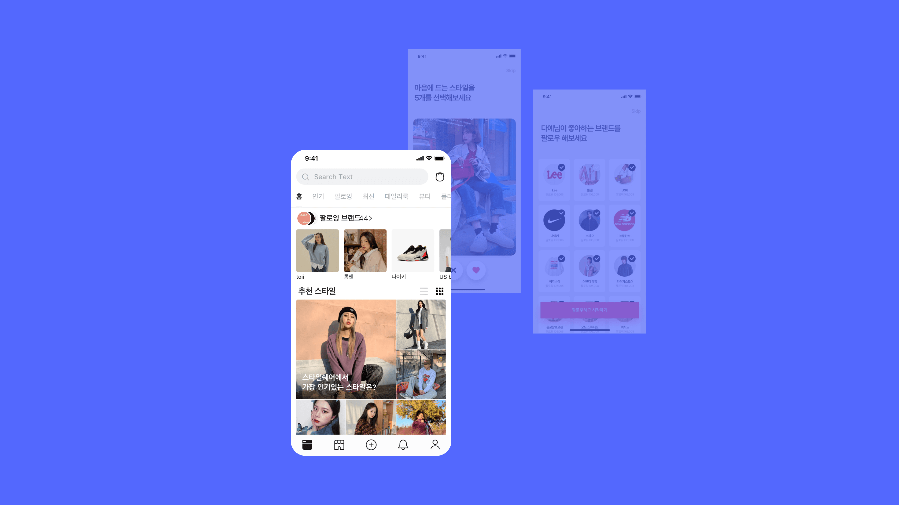
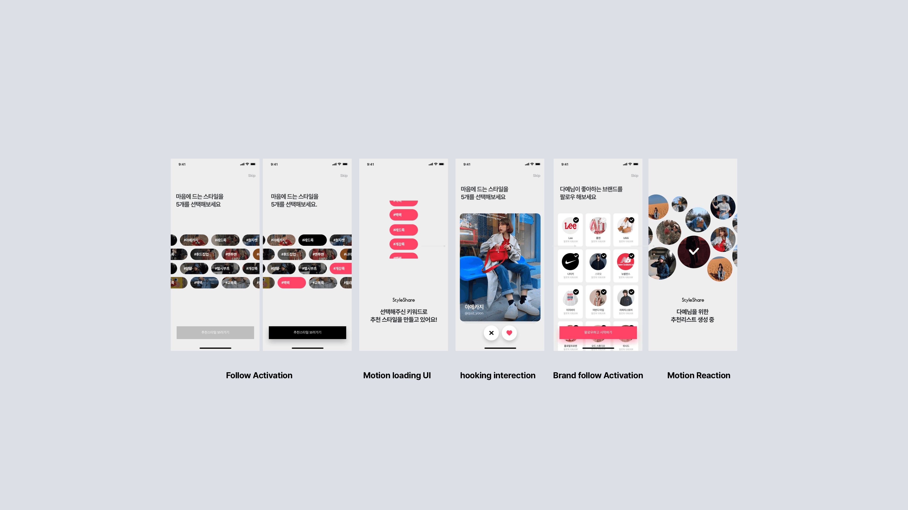
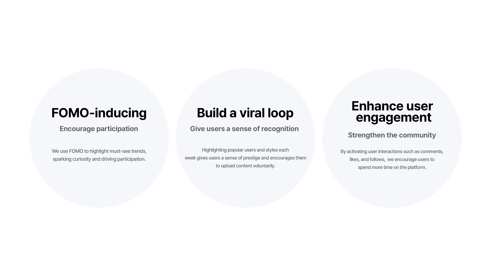
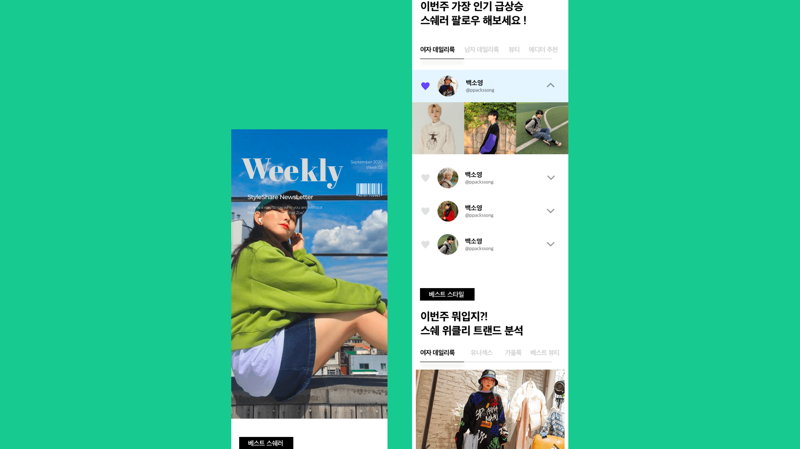
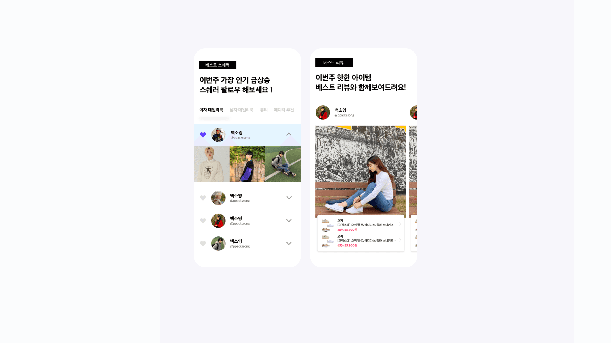
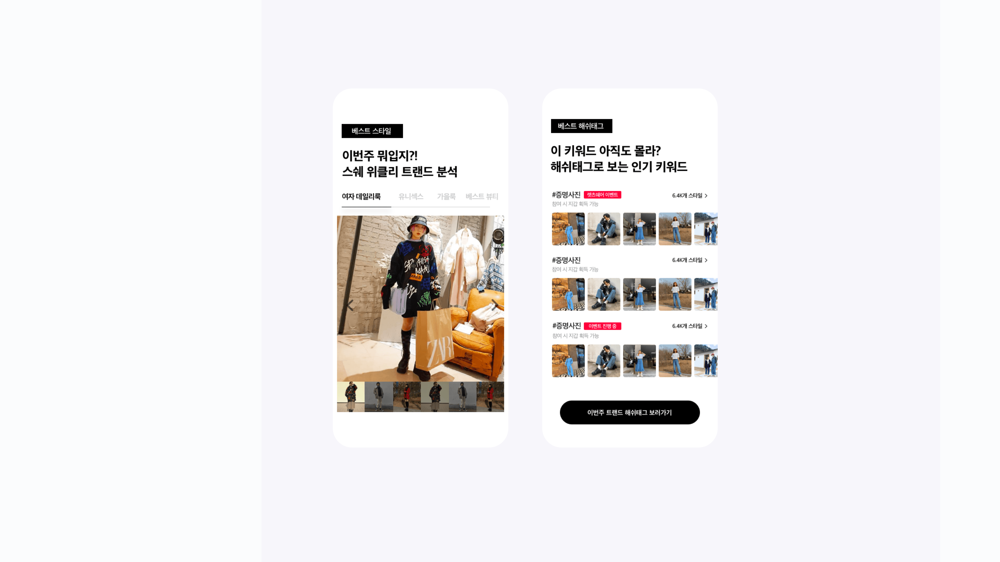

StyleShare was losing its 20s users — and fast. Churn rate in that cohort exceeded 50%, well above other age groups. The gut reaction was a content problem, but user interviews told a different story.
20s users weren't leaving because the product was bad. They were leaving because it never felt like theirs. Across sessions, we kept hearing the same thing: "이 서비스는 10대 느낌이라 내가 찾는 옷이 없어요." The platform had built its identity around teen fashion, and 20s users — despite being a critical growth cohort for revenue — were getting a feed that had nothing to do with them.
This was declared a company-wide problem. Our growth squad took ownership.


I was the only designer on the growth squad. Every experiment we ran — every screen, flow, and A/B variant — went through me. Beyond execution, I drove the ideation process itself: running Sprints and Crazy 8s with the PM, data analyst, and engineers to generate hypotheses, then owning the design as DRI from concept to ship.
Silicon Valley-style product culture applied end-to-end: hypothesis first, design second, data always.
Our data analyst mapped drop-off by cohort. The pattern was clear: 20s users were churning in the first few sessions, not after extended use. This was an Activation and Cold Start problem — not a content depth problem.
New users arrived with no taste profile. The algorithm defaulted to the platform's dominant signal: teen fashion. 20s users saw irrelevant content immediately, concluded the product wasn't for them, and left before personalization ever had a chance to correct itself.
No taste data → Teen-skewed feed → 20s disengage → Algorithm never corrects → More churn. A self-reinforcing trap that no amount of new content could break — unless we fixed the cold start.

The highest-impact initiative I led was designing StyleShare's first real onboarding system. The reference frame was deliberately cross-category.
We looked at Tinder for interaction design — swipe-style selection that makes preference input feel like play, not a form. We looked at Pinterest for data strategy — collecting enough initial signals to seed the recommendation algorithm before a user ever reaches the home feed.
"The goal was dual: give users a genuinely fun, low-friction way to express fashion taste — and collect first-party preference data to cold-start personalization from session one."
We ran multiple A/B test variants — different card formats, selection counts, visual treatments, and progression logic — to find the version that maximized completion rate and downstream retention. This wasn't a single launch; it was an iterated series of experiments.
Onboarding data fed directly into a personalized home feed. 20s users saw content that reflected their input from their very first scroll. We worked closely with the data analyst to define which signals to surface and how to weight fresh user preferences against platform-wide trending content.


Alert & Recommendation Experiments
We ran a series of mid-funnel engagement experiments: cart-based similar item recommendations surfaced relevant alternatives to saved or abandoned items, and personalized push notifications were tested across timing, copy, and trigger conditions to re-engage dormant users. Each variant was grounded in a clear hypothesis, run as an A/B test, and evaluated against conversion metrics.
Home Feed Algorithm Redesign
Beyond the onboarding cold start fix, we iterated on the feed algorithm itself — defining which signals to surface and how to weight fresh user preferences against platform-wide trending content, ensuring the personalization loop strengthened with every session.
Points & Tier System Renewal
To pull churned users back, we redesigned the loyalty and reward system — building a structural habit loop rather than relying on one-off campaigns. The renewal contributed to improved Resurrection Rate among previously inactive users.
| Metric | Result |
|---|---|
| D7 Retention | 35% → 60% (+25%p) |
| D30 Retention | ↑ Improved |
| 20s Churn Rate | ↓ Significant reduction |
| Activation (onboarding → engaged) | ↑ Substantial lift |
| Purchase Conversion Rate | ↑ Improved |
| Resurrection Rate | ↑ Improved |
Running experiments as the sole designer taught me that design in a growth context is hypothesis design as much as visual design. The question isn't "what looks good" — it's "what assumption are we testing, and how do we isolate the variable?"
The Tinder/Pinterest reference was a deliberate UX strategy call. Both products had solved onboarding for preference collection better than any fashion e-commerce product I'd seen. Borrowing the interaction model from outside the category was the key insight that made the onboarding system work.
The result: D7 Retention went from 35% to 60%. Not through a redesign. Through the right experiment, run at the right moment in the user journey, with enough iterations to find the version that actually worked.